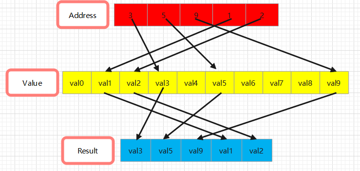

triton.language.gather
1. OP 概述
简介：对srctensor沿axis维度按照index执行gather操作，gather操作含义见下图:

原型：triton.language.gather(
src: tensor,
index: tensor,
axis: int,
_semantic=None
)
2. OP 规格
2.1 参数说明
参数名 |
类型 |
说明 |
|---|---|---|
|
|
被执行gather操作的tensor |
|
|
需要gather的索引 |
|
|
需要执行gather操作的维度 |
|
- |
保留参数，暂不支持外部调用 |
返回值：tensor： gather后的结果
2.2 支持规格
2.2.1 DataType 支持
int8 |
int16 |
int32 |
uint8 |
uint16 |
uint32 |
uint64 |
int64 |
fp16 |
fp32 |
fp64 |
bf16 |
bool |
|
|---|---|---|---|---|---|---|---|---|---|---|---|---|---|
GPU |
× |
× |
× |
× |
× |
× |
× |
× |
√ |
√ |
√ |
√ |
× |
Ascend A2/A3 |
× |
× |
× |
× |
× |
× |
× |
× |
√ |
√ |
× |
√ |
× |
结论：Ascend 对比 GPU 缺失fp64的支持能力（硬件限制）。
2.2.2 Shape 支持
支持维度范围 |
|
|---|---|
GPU |
仅支持 1~5维 tensor |
Ascend A2/A3 |
仅支持 1~5维 tensor |
结论：在 Shape 方面，GPU 与 Ascend 平台无差异，均支持 1 至 5 维张量。
2.3 特殊限制说明
相对社区能力缺失且无法实现
Ascend 对比 GPU 缺失fp64的支持能力（硬件限制）。
2.4 使用方法
参考以下示例：
import math
import numpy as np
import torch
import torch_npu
import triton
import triton.language as tl
import triton.language.extra.ascend.libdevice as libdevice
import test_common
import pytest
from test_common import TestUtils, check_ub_mem_overflow, get_dtype_size
@pytest.mark.parametrize("src_shape, indices_shape, axis", [
([2, 2], [4, 2], 0),
([3, 3], [1, 3], 0),
([3, 4], [4, 4], 0),
([4, 4], [8, 4], 0),
([4, 32], [4, 16], 1),
([4, 64], [4, 32], 1),
([128, 64], [128, 128], 1),
])
def test_gather(src_shape, indices_shape, axis):
@triton.jit
def gather_kernel(src_ptr, idx_ptr, out_ptr, axis: tl.constexpr, src_dim0: tl.constexpr, src_dim1: tl.constexpr,
src_stride0: tl.constexpr, src_stride1: tl.constexpr, idx_dim0: tl.constexpr,
idx_dim1: tl.constexpr, idx_stride0: tl.constexpr, idx_stride1: tl.constexpr,
out_dim0: tl.constexpr, out_dim1: tl.constexpr, out_stride0: tl.constexpr,
out_stride1: tl.constexpr):
src_offs = (tl.arange(0, src_dim0)[:, None] * src_stride0 + tl.arange(0, src_dim1)[None, :] * src_stride1)
src = tl.load(src_ptr + src_offs)
idx_offs = (tl.arange(0, idx_dim0)[:, None] * idx_stride0 + tl.arange(0, idx_dim1)[None, :] * idx_stride1)
idx = tl.load(idx_ptr + idx_offs)
out = tl.gather(src, idx, axis)
out_offs = (tl.arange(0, out_dim0)[:, None] * out_stride0 + tl.arange(0, out_dim1)[None, :] * out_stride1)
tl.store(out_ptr + out_offs, out)
def triton_gather(src: torch.Tensor, axis: int, indices: torch.Tensor):
output = torch.empty(indices.shape, dtype=src.dtype, device=src.device)
gather_kernel[(1, )](src, indices, output, axis,
src.shape[0], src.shape[1],
src.stride(0), src.stride(1),
indices.shape[0], indices.shape[1],
indices.stride(0), indices.stride(1),
output.shape[0], output.shape[1],
output.stride(0), output.stride(1))
return output
DEV = "npu"
src = torch.randn(src_shape, device=DEV)
indices = torch.randint(0, src.shape[axis], indices_shape, device=DEV)
dtype_size = get_dtype_size('int32')
if dtype_size * math.prod(src.shape) >= (TestUtils.ub_size / 8):
print(f"dtype:int32 shape:{src.shape} mem overflow")
return
ref = torch.gather(src, axis, indices)
result = triton_gather(src, axis, indices)
torch.testing.assert_close(result, ref, rtol=0, atol=0)